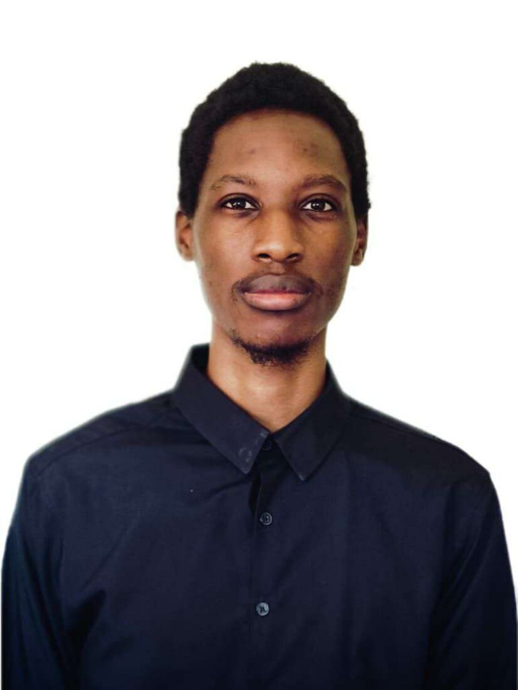
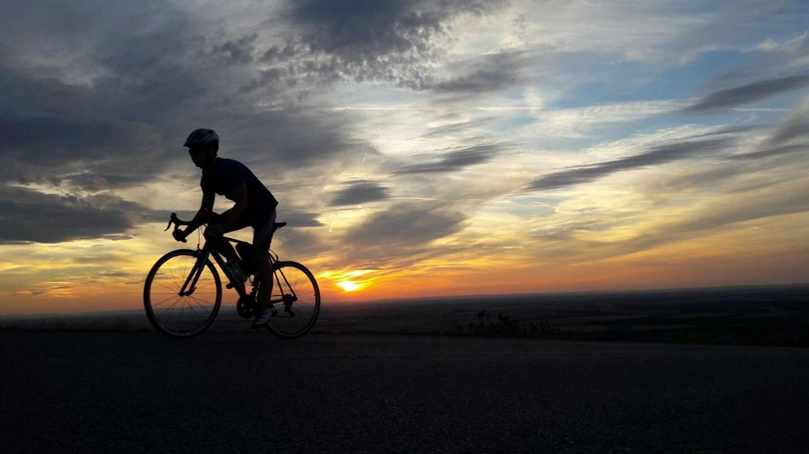
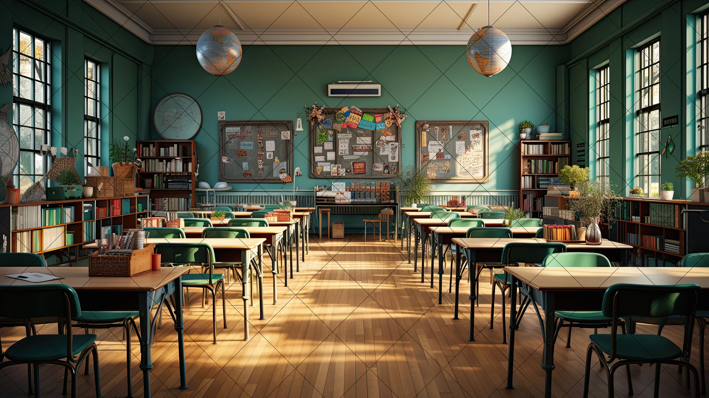

Chess
Strategy & patience
Software Developer
Digital Systems & AI Solutions
I'm a software developer and digital systems specialist focused on technology that measurably improves how organisations operate. My work sits where web development, AI-driven tooling, automation and data management meet — the practical middle ground where a good idea becomes something a team actually uses every day.
What draws me in is the process itself. I want to understand how work really flows, find where it stalls, and rebuild that part so it is simpler and faster. That has meant custom internal systems, management platforms, scheduling and dispatch tools, digital record systems and AI-assisted workflows — replacing manual steps with software that holds up under daily use.
Alongside the technical side I bring analytical thinking, close attention to detail and a habit of continuous learning. My goal is never simply to write software: it is to understand the problem underneath it and build technology that delivers real, measurable value.

Six areas that shape how I approach a build — from the interface a person touches to the data underneath it.
Five things I return to. Each one trains something the work quietly depends on.
I play chess as a way of developing strategic thinking, patience and problem-solving. I particularly enjoy analysing positions, anticipating an opponent's moves and building creative strategies toward a strong outcome.
Playing the piano is a creative outlet that lets me express myself through music. Learning and practising different pieces develops discipline, concentration, coordination and an appreciation for musical composition.
Cooking combines creativity, precision and experimentation. I like exploring different recipes, ingredients and pastry techniques while creating meals that are both enjoyable and well presented.

Cycling is something I enjoy for both recreation and fitness. I appreciate the sense of freedom it provides, alongside the challenge of improving endurance, staying consistent and exploring new routes.
Painting lets me express creativity and attention to detail through colour, composition and visual storytelling. I enjoy experimenting with techniques and turning ideas or observations into something tangible and visually engaging.
Four builds that show the range — a machine learning competition entry, a climate data interface, a deployed Python game and a creative browser experiment.
Deep Learning IndabaX Zimbabwe Hackathon — AI for Financial Inclusion
A machine learning model built with team GitHappens to predict loan default risk in Zimbabwe's banking sector, tackling financial inclusion through better credit decisioning. The team placed 13th overall on the competition leaderboard and finished 3rd in Zimbabwe.
POTRAZ AI4I Challenge — Designer Track
A district-level interface for rainfall, crop risk and farmgate prices — built for the people who act on the data rather than only report it. Visitors pick their role (extension officer, farmer association lead or food security planner) and the recommendations change with them; filters for province, crop, month and risk band update the charts and district ledger live. Built to WCAG 2.1 AA: 4.5:1 contrast, 44×44px touch targets, full keyboard navigation and text alternatives for every chart.
Python Twinkering
A deliberately constrained experiment: build and deploy a complete, playable game using a single Python library. The point was to show how far a tight toolset can go when the logic is clean — from first mechanic to a deployed, runnable result.
Interactive browser sketch
A lightweight creative build exploring drawing, input and motion in the browser — the kind of small experiment that keeps the fundamentals sharp between larger systems work.
Riverview Primary School
Developing and maintaining internal digital systems that support day-to-day school operations — building custom tools that replace manual record-keeping and administrative processes with software the staff can rely on.
StudyPartners
Managed and organised operational data while supporting tutoring delivery, maintaining a consistent record of high-quality assistance and client satisfaction throughout the engagement.
Dairibord
Diagnosed and resolved technical system issues, tracing faults to their root cause and restoring service — early, hands-on grounding in how operational systems behave under real production pressure.

Ten completed certifications across Python engineering, machine learning, data and cyber security. Select any certificate to view it in full.
I'm always looking for opportunities to work on challenging projects, contribute to innovative teams and develop digital solutions that make a measurable difference.